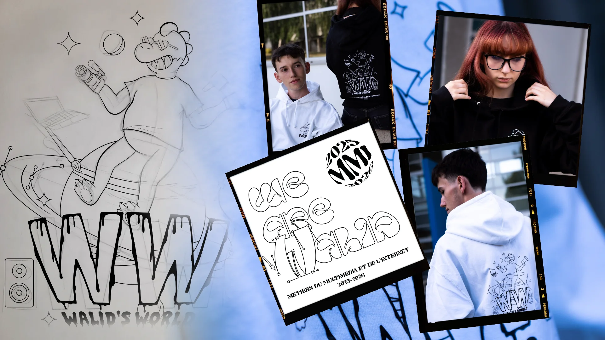
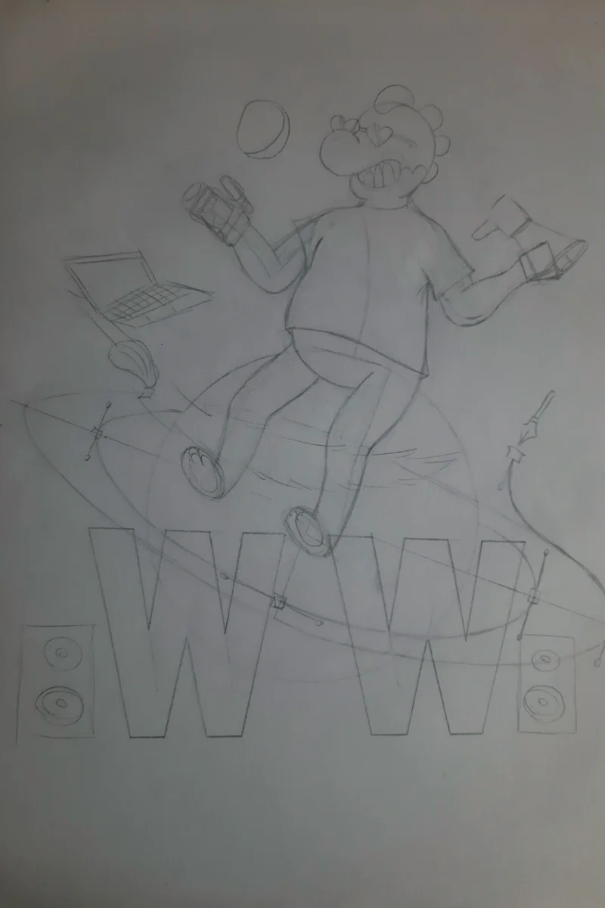
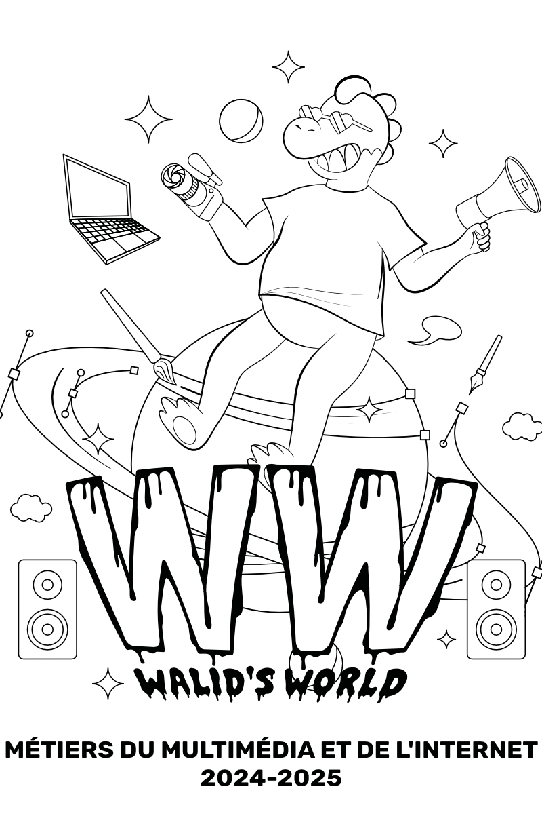
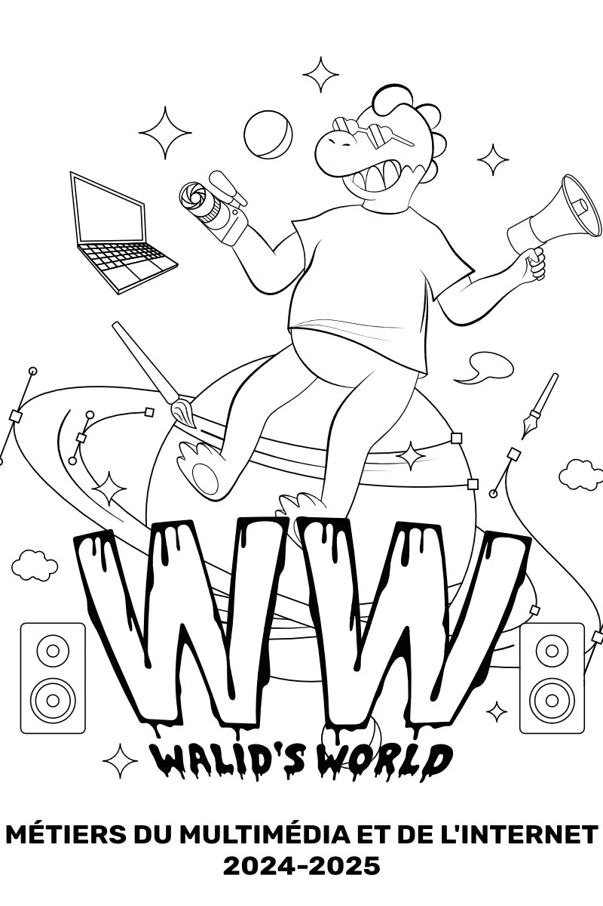
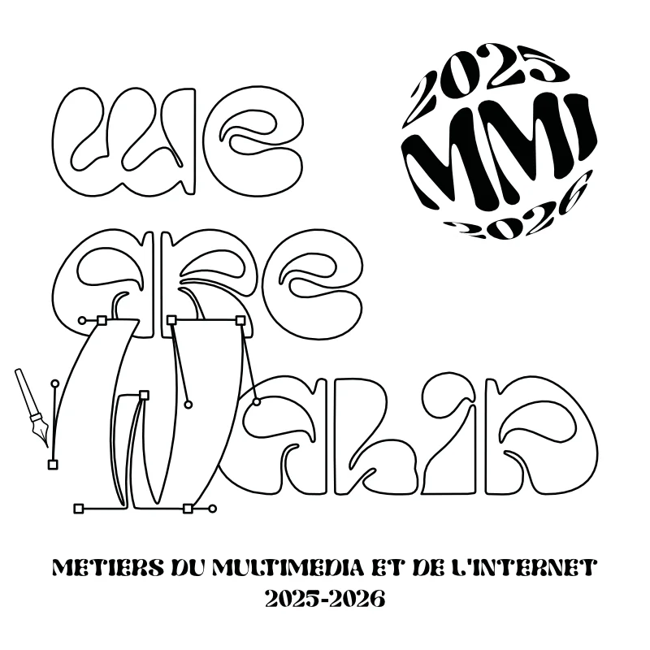
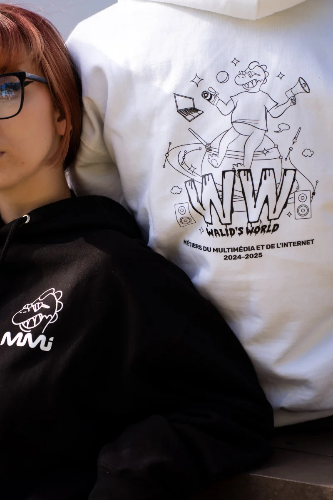
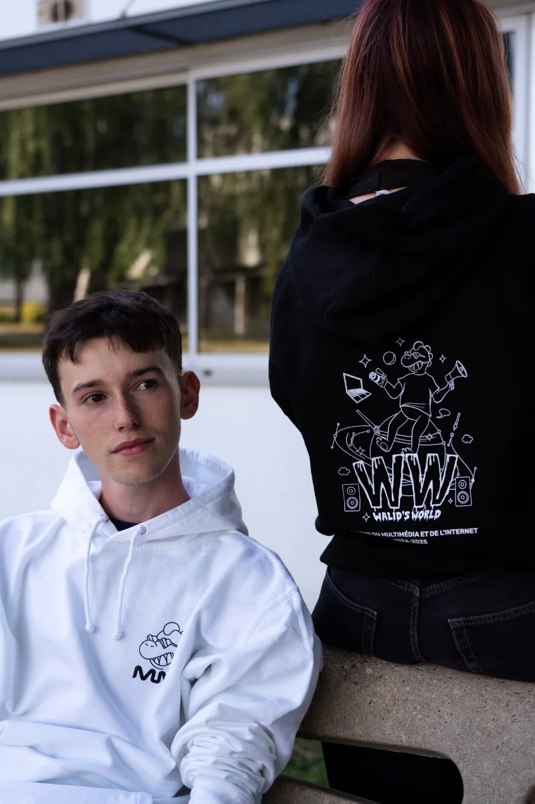
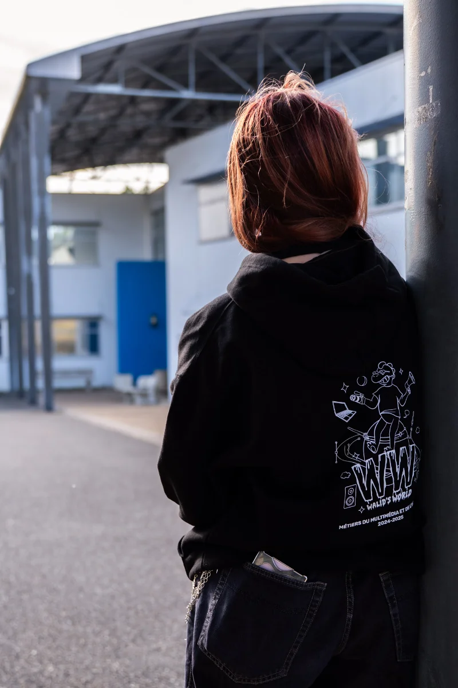
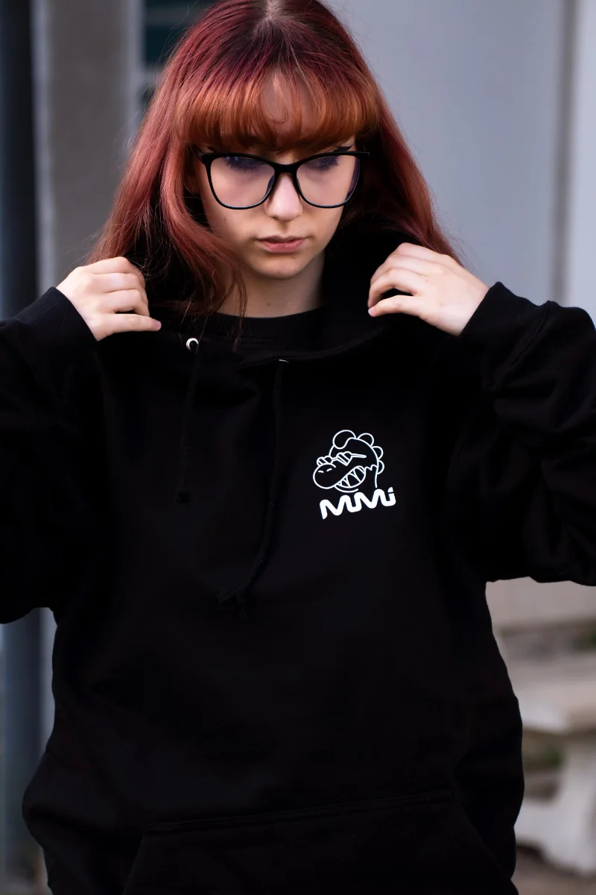
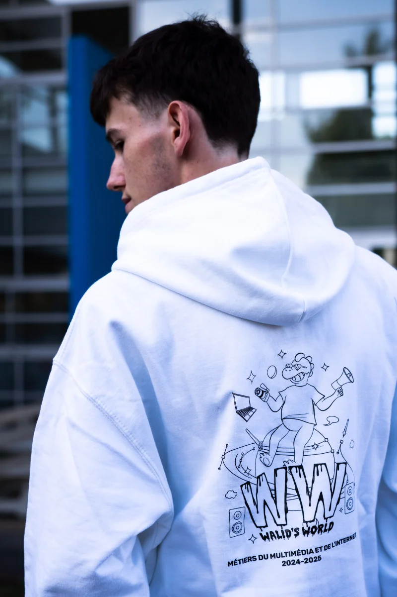

Sweat MMI
Deux années, deux designs,
deux victoires.
Le projet
Porter l'identité
de toute une promo.
Chaque année, le BDE MMI organise un concours où les étudiants proposent le design du sweat de promotion. Ce n'est pas qu'un vêtement — c'est un symbole. Celui que toute la promo portera pendant l'année et gardera comme souvenir de son passage en MMI.
Je participe depuis l'année 2023 - 2024 avec une intention claire : représenter l'identité du département en mettant en avant Walid, notre mascotte. Trois années, deux victoires.
Compétences
- Conception graphique
- Illustration
- Typographie
Outils
- Affinity Designer
- Croquis papier
- Mockups textiles
Designs
- Walid's World (2024 - 2025)
- We Are Walid (2025 - 2026)
Walid's World · 2024
La première
victoire.
Pour cette première participation, j'ai voulu créer un univers autour de Walid. Le processus a commencé par des croquis papier pour explorer les directions possibles, puis le design a été affiné sur Affinity Designer. L'objectif : un visuel qui donne envie d'être porté au quotidien, pas juste un logo posé sur un tissu. Sur 8 participants, le design a remporté 59% des votes en finale.



We Are Walid · 2025
Confirmer,
pas se répéter.
La deuxième année, l'enjeu était différent : il fallait proposer quelque chose de nouveau sans perdre ce qui avait marché. J'ai poussé l'identité plus loin, en jouant sur la notion de collectif — "We Are Walid", c'est l'idée que Walid, c'est nous tous. Même processus de création, nouvelle direction artistique. Résultat : 56% des voix.

Résultats
Galerie




